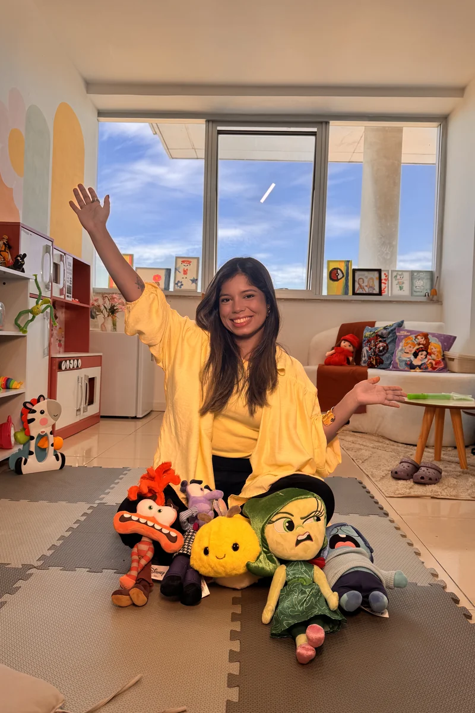

Quando o pediatra, a escola ou seu instinto sinalizam que algo merece um olhar mais profundo, a avaliação neuropsicológica traduz o comportamento da criança em dados clínicos e direcionamentos práticos.
Aplico bateria completa de testes psicológicos validados — WISC-IV, NEPSY-II, CONNERS, Vineland, CBCL e instrumentos específicos para TEA — para investigar TDAH, espectro autista, dificuldades de aprendizagem e perfil cognitivo. Entrego laudo escrito que serve para escola, plano de saúde e direcionamento terapêutico.

Sinais comuns que motivam famílias a buscar testagem. Não é necessário ter "certeza" antes — a avaliação existe exatamente para esclarecer.
Queixas escolares sobre concentração, esquecimento e agitação. Crianças que "não param", esquecem tarefas, ou levam horas para terminar deveres simples.
Atraso ou regressão de linguagem, contato visual reduzido, interesses muito restritos, sensibilidade sensorial atípica ou dificuldade marcada em interagir com pares.
Criança esforçada que não consegue acompanhar a turma. Possíveis dislexia, discalculia, transtorno da linguagem ou simplesmente perfil cognitivo específico que precisa de adaptação.
Criança que "chuta" anos à frente em algumas áreas mas regride em outras, ou que se entedia na escola. Avaliação identifica e direciona enriquecimento curricular.
A escola sugeriu avaliação. Importante: a escola observa, mas não diagnostica. O laudo neuropsicológico é o documento técnico que define adaptações pedagógicas.
Diagnóstico anterior gerou dúvidas, ou houve mudança de comportamento que merece reavaliação. Reavaliações periódicas são padrão em TEA e TDAH.
Processo estruturado, sem surpresas. Você sabe o que esperar em cada etapa.
Conversa só com pais ou responsáveis. Histórico do desenvolvimento desde a gestação, queixas atuais, vida escolar, vida familiar, sono e alimentação. Definição da hipótese inicial e da bateria de testes.
Sessões com a criança aplicando os instrumentos selecionados. Atividades em formato de jogos, desenhos e tarefas estruturadas. Sem injeção, sem máquina, sem desconforto físico — é só pensar e responder.
Período de análise dos resultados, comparação com normas brasileiras, cruzamento com a anamnese e construção do laudo escrito. Sem você nessa etapa.
Apresentação do laudo. Explico os achados, o que cada resultado significa, e mais importante: o que fazer com isso. Sugestões para escola, terapias indicadas, próximos passos.
Quando indicado e os pais concordam, faço uma devolutiva adaptada à idade da criança. Saber sobre si mesma é um direito da criança, e quando bem feito, fortalece a autoestima e o engajamento terapêutico.
Documento técnico assinado e timbrado (CRP 05/56789), apto a apresentar à escola, plano de saúde, INSS ou justiça. Suporte para tirar dúvidas após entrega.
Bateria definida em função da hipótese clínica e da idade. Abaixo, os instrumentos mais usados na minha prática.
O padrão-ouro em avaliação de inteligência infantil (6-16 anos). Mede QI total e índices de Compreensão Verbal, Raciocínio Perceptual, Memória de Trabalho e Velocidade de Processamento. Essencial para mapear pontos fortes e desafios.
Avaliação neuropsicológica abrangente para 3-16 anos. Cobre atenção, funções executivas, linguagem, memória, processamento visuoespacial e cognição social. Excelente para investigar TEA e TDAH em conjunto.
Padrão para investigação de TDAH. Versões para pais, professores e (quando aplicável) a própria criança/adolescente. Permite avaliar consistência dos sintomas entre contextos — critério-chave do DSM-5.
Escala de comportamento adaptativo — central na avaliação de TEA. Mede habilidades de vida diária, comunicação, socialização e motricidade em comparação com pares da mesma idade.
Inventários comportamentais respondidos por pais (CBCL), professores (TRF) e adolescentes (YSR). Mapeiam ansiedade, depressão, problemas de conduta, atenção e queixas somáticas.
M-CHAT (rastreio precoce 16-30 meses), CARS-2 (escala de avaliação de autismo) e outros conforme a hipótese clínica. Aplicados em conjunto com Vineland e observação clínica estruturada.
Avaliação neuropsicológica não é só aplicar teste e somar pontuação. É leitura clínica integrada — testes, história de vida, observação comportamental, contexto escolar e familiar.
Atuo com crianças e adolescentes neurodivergentes há anos e tenho neurodivergências dentro da minha própria família. Conviver com TEA e TDAH no cotidiano, somado à formação técnica em TCC, ABA e Neuropsicologia, dá uma sensibilidade que não cabe num teste: saber distinguir o que é traço da criança do que é só ela cansada num dia ruim de aplicação.
O laudo final é técnico e tecnicamente impecável — mas a devolutiva é traduzida para a família em linguagem clara, com sugestões aplicáveis na próxima segunda-feira na escola e em casa.
Leia minha história clínica e pessoal com a neurodivergência →
O investimento varia conforme a bateria definida na anamnese (TEA, TDAH e dificuldades de aprendizagem demandam baterias diferentes). Valores e formas de pagamento são informados após a primeira conversa. Solicito apenas que a família esteja confortável com o investimento antes de iniciar — o processo é longo e merece compromisso.
O atendimento é particular. Emito recibo com CRP que pode ser usado para reembolso conforme política da sua operadora ou para desconto no IR como despesa médica.
Em média 7 a 14 dias após a última sessão de aplicação. O documento é entregue digitalmente (PDF assinado) e fisicamente, se preferir.
Em muitos casos, o laudo neuropsicológico é suficiente — especialmente para TDAH e dificuldades de aprendizagem. Para TEA, é recomendado complemento com neuropediatra (que descarta condições médicas associadas) e fonoaudiólogo (linguagem). Encaminho os profissionais parceiros quando indicado.
Não. Avaliação neuropsicológica é processo, não consulta única. Aplicar 1-2 testes isolados gera resultado parcial e potencialmente enganoso. Aceito iniciar com a família consciente de que o processo todo levará 6-10 sessões.
Avaliação híbrida: anamnese e devolutiva podem ser online. Aplicação de alguns testes (WISC, NEPSY) exige presencial. Para famílias atendidas online para todo o Brasil, organizamos 2-3 viagens curtas para sessões presenciais concentradas.
A avaliação não é um diagnóstico que rotula a criança — é a entrada de uma leitura mais ampla. Entenda como leio o ecossistema da criança no manifesto sobre o método autoral (tubarão e abelhinha).
Deixe seu contato e a Jessica responde com valores e próximos passos no WhatsApp.
A primeira conversa é gratuita e sem compromisso. Eu escuto a demanda da família, explico se a avaliação faz sentido naquele momento e como podemos seguir.
Avaliação presencial no Vertice Mall — Recreio · Modalidade híbrida com atendimento online para todo o Brasil